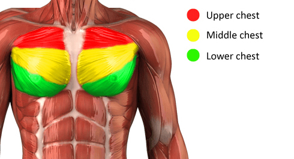

We continue our series of revisiting basic bodyweight exercises and today we are going to talk about push-ups on a more advanced level.
You might think that we have already told you everything in our first post, but there is much more to be told, because push-ups are the key exercise for building upper body strength and muscle mass. Some people might argue that dips are better, but they provide different training load and we will talk about them in a dedicated post later.
To understand today's information better let's get a little bit into anatomy of chest muscles:

As you can see chest muscles (pectoralis major) are made of 3 parts and by doing different kinds of push-ups you can shift the training load from one part of the chest to another. This approach will make you able to develop full rounded chest and balanced physique.
Everything is depending on the placement of your legs in correlation to chest on the vertical scale. The higher your chest above the legs, the more you train the lower part of chest muscles, otherwise, the higher are your legs above your chest, the more you train upper part of the chest muscles. That is why dips are the ultimate position for chest being above the legs and why they are ideal for building lower chest muscles.
Moving on we want to bust one popular internet myth regarding chest muscles. You can find a lot of information on so called "inner chest musclest" and "outer chest muscles" and advices to do push-ups with narrow or wide stance in order to develop them. But as you can see from the picture above, anatomically THERE IS NO suc division of chest muscles, thus there is no exercises which would allow you to train inner and outer parts of chest muscles separately. Because muscle is being flexed in stretched evenly over the entire length.
Then why do you experience sensations in the middle of the chest during one type of push-ups and in the outer parts of the chest during other type of push-ups? This is all because chest muscles have two places where they connect to bones, and this connection also experience training load during your workouts. And it is it that provides you with pain, and not the muscle itself.
So there is no correlation between width of stance on horisontal axis and different parts of chest muscles. There is only correlation between width of stance and how the training load would be divided between chest and triceps.
As you might remember from our first post about push-ups, one of the key function of chest muscles is bringing your shoulder to the body. So when you place your hands narrower then your shoulder width, then your shoulder happens to be already brought to the body, so the main work is done in elbow joint (thus by triceps and not by chest muscles). Respectively, when you place your hands wider than your should width, then you increase the training load for chest muscles by increasing the range of motion of the shoulder.
One more important moment that we need to tell you about is the placement of your hands regarding the central horisontal line of your body. By default in push-ups you place your hands on the same level as your shoulders (more or less). But if you place them closer to your stomach then you will shift the training load from the chest muscles to your shoulder muscles. All these little moments make push-ups much more effective and usefull exercise than most people think of it.
All in all, we want to bring your attention to the fact, that training process and exercise perfomance are ALWAYS based on anatomy, biomechanics and physics, so in order to get results faster, you have to understand how your body is build and how it is working. This is important both, for building a well balanced strong body and balanced physique as well.